Built and shipped
Production work for Airspace Link and the City of Rochester, NH, plus AI and data engineering projects of my own. Featured projects open into case studies.
Cesium Drone Simulator
Case Study
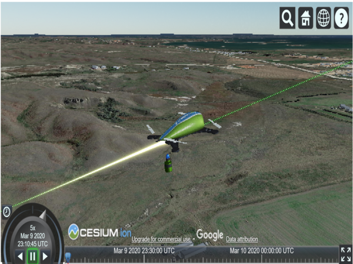
3D drone flight simulation over photorealistic terrain using Cesium.js with glTF model and real-time flight path rendering. Deployed to the AirHub Marketplace.
ArcGIS JS SDKCesium.jsCesium IonglTF
- Problem
- Operators and city officials had no way to visualize planned drone routes in the context of real-world terrain, buildings, and obstacles, making it difficult to assess operational risk or plan missions over complex urban environments.
- Approach
- Built a 3D flight simulator using Cesium.js with photorealistic 3D tiles and real route data. Operators can load planned flight paths over actual cityscapes, simulate drone operations, and identify obstacle conflicts before flying. Integrated glTF drone models for realistic visualization.
- Outcome
- Deployed to the AirHub Marketplace, giving municipal clients and drone operators a planning and risk assessment tool that demonstrates the value of UAS operations in their communities using their own real-world geography.
Airspace Link
Airspace Obstruction Calculator
Case Study
Web application for evaluating airspace obstruction risk. Computes ground elevation at a proposed structure location and compares its AGL height against overlapping FAA restriction surfaces to determine penetration or clearance, with an interactive cross-section diagram.
ArcGIS JS SDKElevation ServiceJavaScriptChart.js
- Problem
- Engineers relied on manual calculations and spreadsheets to determine whether proposed structures would penetrate restricted airspace. This was slow, error-prone, and didn't scale across complex airspace environments.
- Approach
- Built a web application that automates airspace obstruction analysis. Users select a location, enter a proposed structure height, and receive an instant penetration-or-clearance determination with a visual cross-section diagram.
- Outcome
- Replaced manual spreadsheet workflows with an interactive tool that delivers instant obstruction analysis, reducing calculation time from hours to seconds.
Airspace Link
Datum
Web App
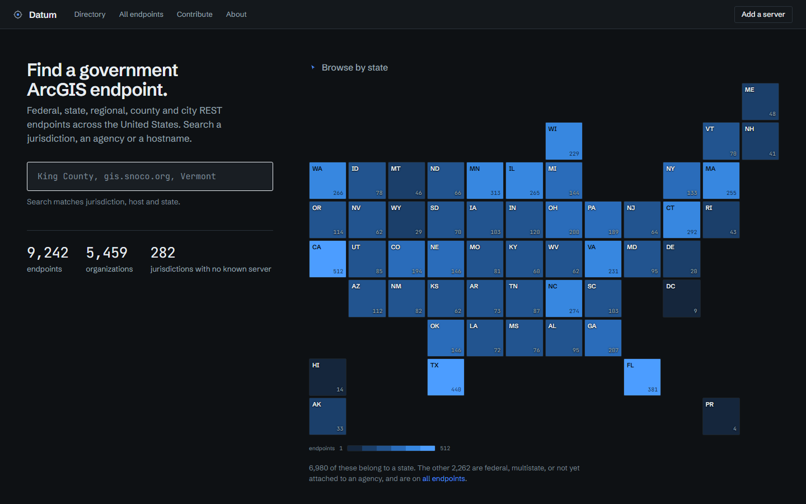
Searchable directory of 9,242 public government ArcGIS REST endpoints across 5,459 US organizations and every state. Each endpoint carries its verification status. A static Astro build generates 9,000+ pages from CSVs with no backend, and the home page has a state cartogram for browsing.
AstroTypeScriptMapLibre GLMiniSearchPythonArcGIS REST
View live site ↗
Personal
Romulus MI Airspace & Ground Risk Analysis
Case Study
BEFORE
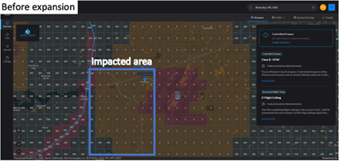
AFTER
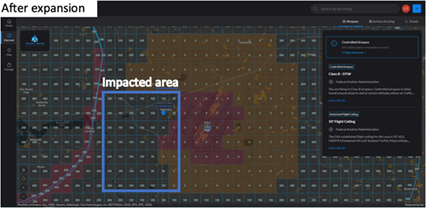
Led a spatial analysis that elevated 34 FAA ceiling grids and expanded legal drone flight area by nearly 14 square miles in Romulus, directly benefiting 5,500+ residents and nearly 300 businesses.
ArcGIS ProAirHub HexGenFAA APIPostgreSQL
- Problem
- FAA airspace restrictions in Romulus, MI were overly conservative, limiting legal drone operations and preventing residents and businesses from accessing UAS services across large portions of the city.
- Approach
- Used AirHub HexGen to generate a ground risk surface from 30+ obstruction datasets. Analyzed DTW approach/departure surfaces for overlapping air hazards and evaluated temporal flight density and historical air traffic data to assess air risk. Combined ground and air risk assessments to determine which flight grids could safely have their ceiling heights elevated.
- Outcome
- Successfully elevated 34 ceiling grids, expanding legal drone flight area by nearly 14 square miles and opening new drone opportunity zones for 5,500+ residents and nearly 300 businesses.
Airspace Link
Drone Operations Assessment
Case Study
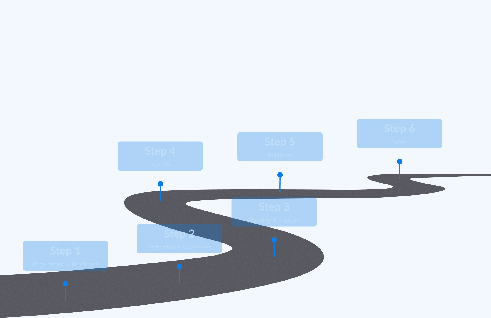
Automated a workflow to assess community drone program readiness and map customers onto a 6-phase UAS integration framework. Led to increased customer retention and reduction in onboarding time.
Survey123Power AutomateArcGIS OnlineReport Templates
- Problem
- Many municipalities and organizations want to adopt drone programs but don't know where to start. Account managers were manually generating readiness reports through spreadsheets, which was slow and inconsistent. It delayed onboarding and made it difficult to track where clients stood in their drone adoption journey.
- Approach
- Built an automated assessment pipeline using Survey123 for data capture, Power Automate for workflow orchestration and account manager alerts, and Report Templates for standardized output. The system maps each client onto a 6-phase UAS integration framework, quantifying their readiness level and identifying specific strengths and areas for improvement.
- Outcome
- Reduced report generation time by ~50% and eliminated manual inconsistencies. Account managers now receive automated alerts on new assessments, enabling faster client onboarding. The framework gives organizations a clear roadmap from initial regulations through scaling their drone programs.
Airspace Link
Arlington TX Story Map
Case Study
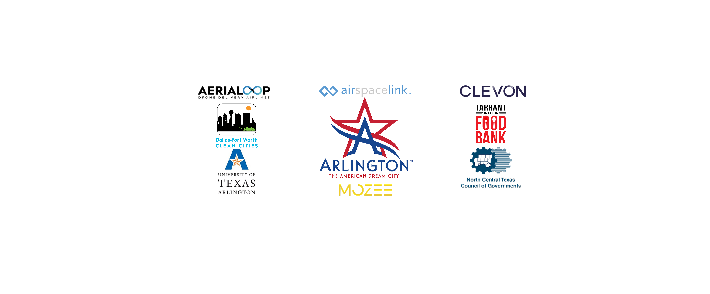
Multimodal Delivery Demonstration Story Map for the City of Arlington, TX. Investigated the feasibility of fully electric multimodal last-mile delivery via autonomous vehicles and UAS for underserved communities.
ArcGIS StoryMapsNetwork AnalystroutingpyArcGIS Pro
- Problem
- Underserved communities in Arlington's 76010 zip code had limited access to healthy food and no viable last-mile delivery infrastructure. The city needed to evaluate whether fully electric autonomous vehicles and UAS could fill this gap.
- Approach
- Performed network analysis to optimize autonomous ground vehicle routing, constraining for speed limits over 40mph, U-turns, and unprotected left turns. Defined two delivery zones based on vehicle range limitations and community partner locations including the Tarrant Area Food Bank and UT Arlington. Built the Story Map to communicate the full demonstration to stakeholders.
- Outcome
- Two demonstrations delivered 311 grocery packages to households across two phases. Demo 1 (139 deliveries) validated the air-to-ground handoff model. Demo 2 (172 deliveries) expanded the zone and added Beyond Visual Line of Sight and dual-drone operations. UT Arlington surveys confirmed community acceptance of autonomous delivery.
Airspace Link
Async Data Pipeline
Case Study
NYC 311 ingestion pipeline with concurrent file loading benchmark. asyncio gives only 1.2x speedup on local CSVs due to GIL contention during parsing.
PythonasynciopandasSocrata API
- Problem
- NYC 311 data arrives as large CSVs that bottleneck sequential ETL pipelines. Needed to benchmark whether async I/O could meaningfully speed up local file ingestion.
- Approach
- Built an async pipeline using asyncio and aiofiles, then benchmarked against synchronous pandas reads across varying file sizes and concurrency levels.
- Outcome
- Discovered asyncio yields only 1.2x speedup on local CSVs due to GIL contention during parsing. This informed downstream architecture decisions to use multiprocessing for CPU-bound geospatial transforms.
Personal
SVD Image Compression
Case Study

Matrix decomposition applied to satellite imagery. Compressed a 23MB Sentinel-2 scene to 4MB while retaining 95% of spectral information.
PythonNumPyrasterioSVD
- Problem
- Satellite imagery files are massive. Needed a way to compress multi-band Sentinel-2 scenes for faster transmission and storage without losing critical spectral data.
- Approach
- Applied Singular Value Decomposition (SVD) per-band, iterating over rank thresholds to find the optimal compression-to-fidelity tradeoff for each spectral band.
- Outcome
- Achieved 82% file size reduction (23MB to 4MB) while retaining 95% of spectral information. Validated by comparing NDVI calculations on original vs. compressed imagery.
Personal
Rochester NH Drone App
ESRI
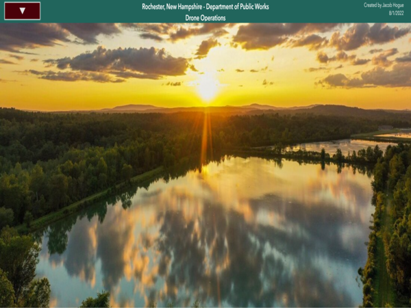
Drone suitability analysis and flight planning application for municipal UAS operations with 3D scene integration and field data collection.
Experience Builder3D ScenesSuitability ModelerDashboardsSurvey123
View live app ↗
City of Rochester, NH
Air Quality Dashboard
Web App
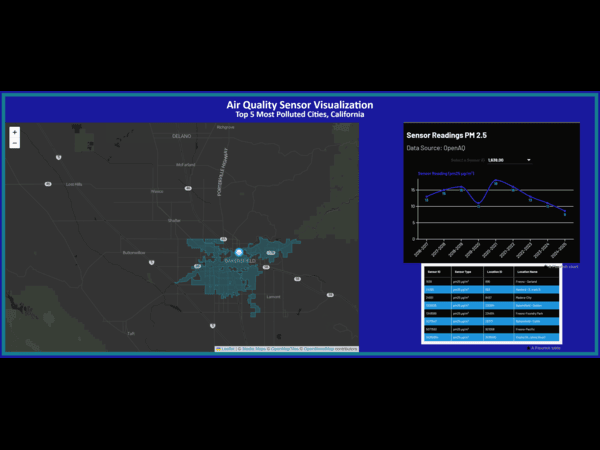
Real-time PM2.5 air quality map for the 5 most polluted US cities. Leaflet frontend with PostGIS backend pulling live data from OpenAQ API.
FlaskLeafletPostGISOpenAQ
View on GitHub ↗
Personal
Climate Station Analysis
AI & Data

Validated ETL pipeline for geospatial climate data with automated quality gates. Schema integrity, coordinate bounds, and temporal completeness.
PythonpandaspytestNOAA API
View on GitHub ↗
Personal
Probability Dashboard
AI & Data

Interactive notebook exploring Beta, Normal, and Dirichlet distributions through geospatial uncertainty problems.
PythonSciPyipywidgetsMatplotlib
View on GitHub ↗
Personal
Spatial SQL Optimization
AI & Data

Benchmarked five spatial queries on 500K OpenStreetMap features in PostGIS. Three hit 10x+ speedups through indexing, CTEs, and window functions. One dropped from 6.5 minutes to 5 seconds.
SQLPostgreSQLPostGISIndexingCTEs
View on GitHub ↗
Personal
Data Quality Pipeline
AI & Data

dbt pipeline on DuckDB ingesting 33K USGS earthquake events with 28 automated quality tests. Coordinate bounds, magnitude ranges, null detection, and duplicate checks with CI that blocks merges on failure.
PythondbtDuckDBGreat ExpectationsGitHub Actions
View on GitHub ↗
Personal
Vehicle Maintenance Tracker
ESRI
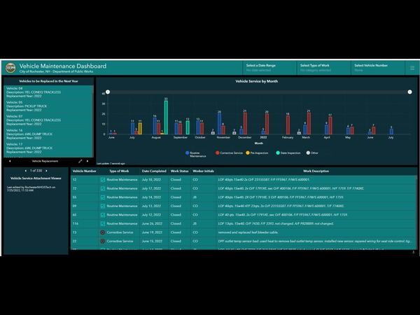
Fleet management application tracking vehicle maintenance schedules, budgets, and real-time location via Verizon fleet sensors.
DashboardsSurvey123ArcadeArcGIS Python APIFleet Sensors
City of Rochester, NH
Service Request & Work Order
ESRI
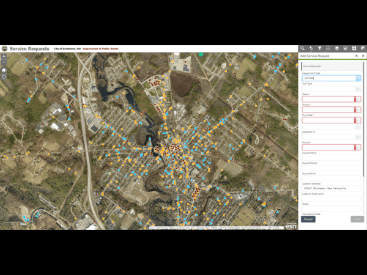
End-to-end workflow for city staff to submit, track, and manage infrastructure service requests and work orders backed by an Enterprise geodatabase.
Web App BuilderCollectorArcadeArcGIS EnterpriseSQL Server
City of Rochester, NH
CA Destructive Wildfires
Web App
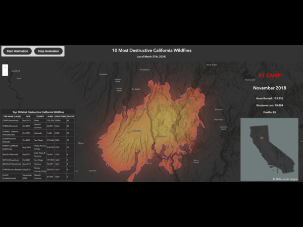
Interactive map of California's 10 most destructive wildfires with blend modes, feature effects, and animated transitions.
ArcGIS JS SDKFeature EffectsBlend ModesJavaScript
View live ↗
Personal
Global Hurricanes (1842-2022)
Web App
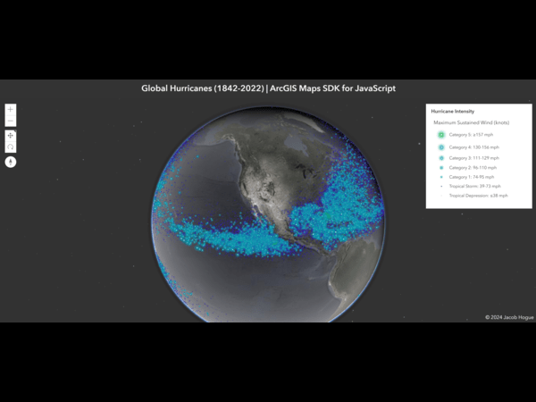
Interactive visualization of 180 years of global hurricane tracks with temporal filtering and path animation.
ArcGIS JS SDKTemporal FilteringFeature LayerJavaScript
View live ↗
Personal
Street Sweeper Progress
ESRI
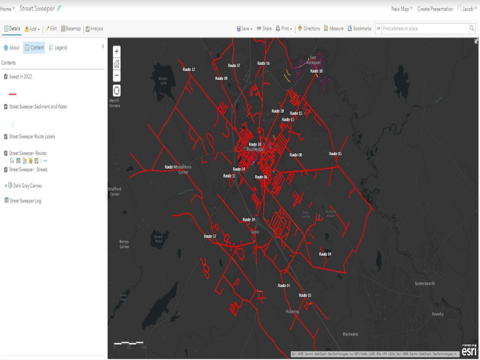
Operational map tracking street sweeper coverage with calculated curb miles and estimated sediment collected, updated via related tables linked to the feature layer.
ArcGIS OnlineRelated TablesArcadeMap Viewer
City of Rochester, NH
Asset Inspection Priorities
ESRI
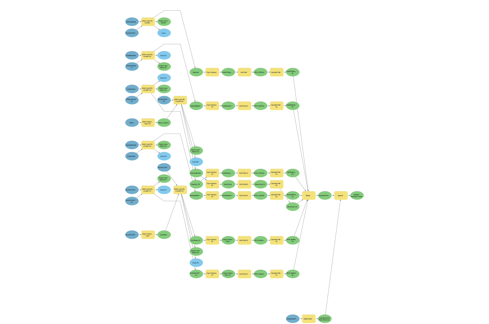
Automated infrastructure inspection prioritization model using ModelBuilder and operational dashboards.
ModelBuilderArcGIS EnterpriseDashboards
City of Rochester, NH
Spyglass Blend Modes
Web App
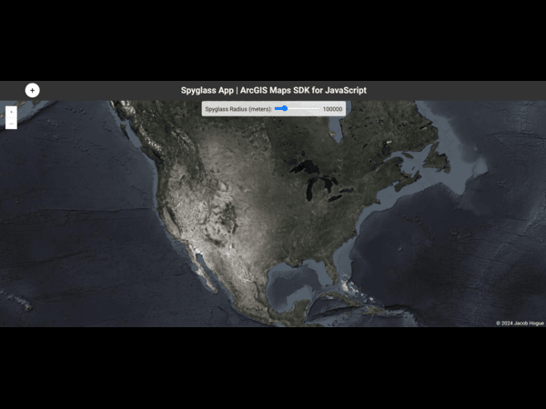
Interactive spyglass effect using ArcGIS blend modes to reveal different basemap layers through a movable lens.
ArcGIS JS SDKFeature EffectsBlend ModesJavaScript
View live ↗
Personal
Drone Threat Index
Web App
Route-aware risk analysis app on AirHub Marketplace. It scores a planned drone route against multiple infrastructure datasets so operators can see where a flight crosses higher-risk ground before they fly.
ArcGIS Maps SDK for JavaScriptValhallaTailwind CSSPlaywrightGitHub Actions
- Problem
- Operators planning flights in complex airspace had no single view of ground risk along a route. The relevant infrastructure data lived in separate datasets, and reading them together by hand did not scale.
- Approach
- Started with white-paper research into existing threat-index methods, then a Leaflet prototype to settle the scoring and the interface. Rebuilt the production version on the ArcGIS Maps SDK for JavaScript, with Valhalla tracing live routes from stations to nearby spatial cells. Shipped in small releases from local through dev, staging and production.
- Outcome
- A production app on AirHub Marketplace that operators use for flight planning in complex airspace, built from research to release in one iterative loop.
Airspace Link
Detroit AAIR Drone Response Dashboards
Case Study
One Experience Builder app for the Detroit Advanced Aerial Innovation Region that compares simulated drone-as-first-responder routes against ground response for fire, police and EMS incidents, refreshed daily from the city's incident feeds.
Experience BuilderArcGIS API for PythonOperations Dashboardsroutingpy3D Scenes
- Problem
- Program stakeholders needed one place to weigh several drone use cases, with the city's locations and demographics alongside them, instead of a separate study for each.
- Approach
- Scheduled ArcGIS API for Python notebooks check the public 911, fire and EMS feature services and append new incidents daily. For each incident the pipeline builds a simulated drone route from the nearest station that steers around FAA obstacles and airspace restrictions, and a ground route on the road network with routingpy, then compares response time and distance by station in three Operations Dashboards. The same app holds drone park siting, infrastructure inspection priorities, a 3D scene over Michigan Central, and a demographics web map.
- Outcome
- Quantified the time and distance difference between drone and ground response across the three incident types, kept current without manual work, and presented to Detroit fire and police department leadership.
Airspace Link
Statewide Stream Crossing Assessment
Field GIS
Assessed about 450 culvert and bridge crossings across New Hampshire for a FEMA-funded hazard mitigation program, scoring each with geomorphic compatibility indices that feed hydraulic models and culvert replacement priorities. Processed SSURGO soils and LiDAR DEMs with ArcHydro for watershed delineation, ran QA/QC in the Statewide Asset Data Exchange System, and trained Regional Planning Commission staff on the assessment protocol.
ArcHydroLiDAR DEMSSURGOSADESField Survey
Read the NH Stream Crossing Assessment Protocol (PDF) ↗
NH Geological Survey
Wood Turtle Field Data Collection
Field App
ArcGIS Collector app for the American Turtle Observatory, built so field crews could record species abundance and habitat characteristics at each site for wood turtle population tracking.
ArcGIS CollectorArcGIS OnlineField Data Design
Antioch University
Bow NH Natural Resources Inventory
Cartography
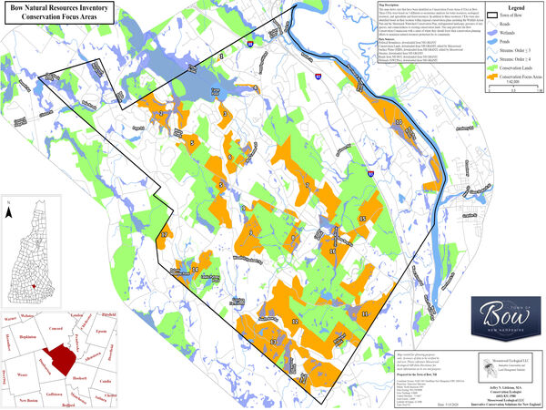
Multi-layer conservation focus area map series with co-occurrence analysis for the town of Bow, NH.
ArcGIS ProGPSPythonCustom Toolbox
View full map series ↗
Antioch University
Automating NRI — Master's Practicum
Paper
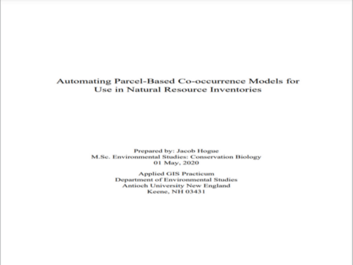
Master's research on automating Natural Resource Inventory mapping with Python and arcpy. Reduced manual GIS processing time for conservation organizations.
PythonarcpyArcGIS Pro
Read paper ↗
Antioch University
Stochastic Analysis — Vernal Pools
Paper
Whitebox-based stochastic analysis for predicting vernal pool locations using DEM-derived hydrology, NDWI, and probabilistic modeling.
WhiteboxArcGIS ProNDWIArcHydro
Read paper ↗
Antioch University
Kenerdell Superfund Site
Cartography
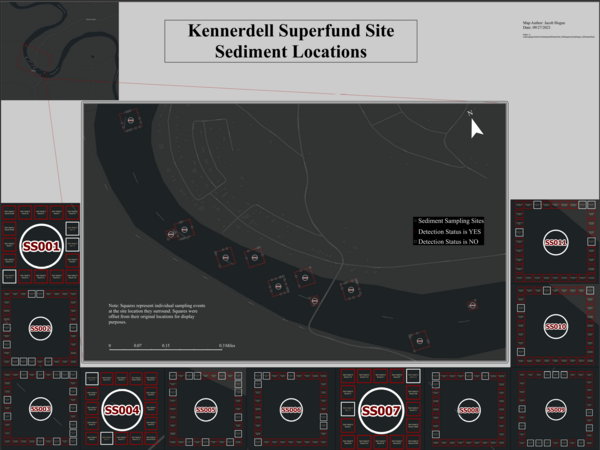
Environmental contamination assessment map showing soil sampling locations, contaminant plumes, and remediation zones.
ArcGIS ProExcel
Personal
Imhof Hillshade
Cartography
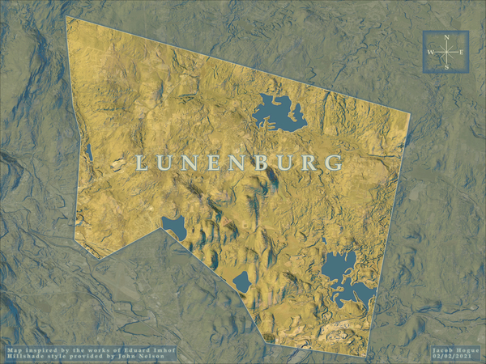
Artistic terrain visualization using the Eduard Imhof hillshading technique for realistic topographic relief rendering.
ArcGIS Pro
Personal
Middle Earth
Cartography
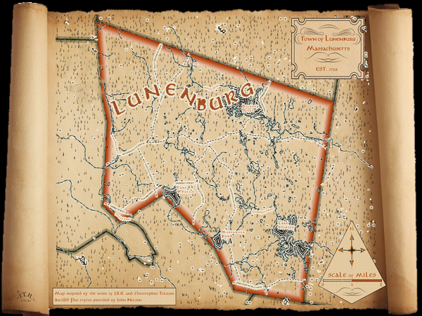
Historical-style fantasy cartography of Tolkien's Middle Earth with custom symbology and terrain rendering.
ArcGIS Pro
Personal
What people I've worked with say
2022 – present
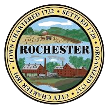
City of Rochester, NHGIS / Asset Management Technician2021 – 2022
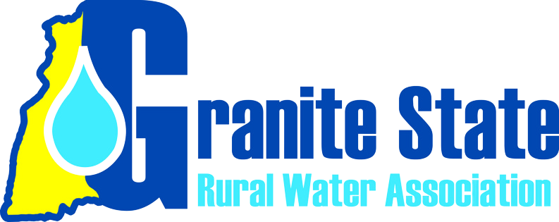
Granite State Rural Water AssociationGIS / Source Water Specialist2020 – 2021
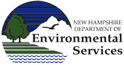
NH Geological SurveyStream Crossing Assessor2019
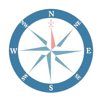
Antioch University New EnglandGIS Research & Teaching Assistant2018 – 2020